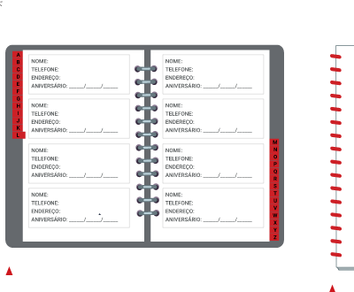
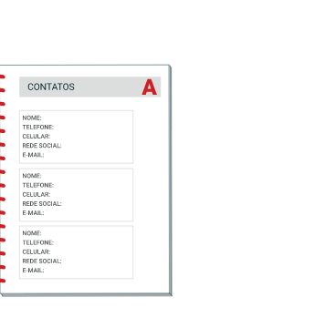

PARA AS INSTITUIÇÕES FINANCEIRAS, ENTRETANTO, O SÁBADO NÃO É CONSIDERADO DIA ÚTIL.
VOCÊ JÁ PASSOU POR ALGUMA SITUAÇÃO EM QUE PRECISOU SABER SE DETERMINADO DIA ERA ÚTIL OU NÃO?
COMENTE COM OS COLEGAS.
ESCRITA EM CONTEXTO
VOCÊ VAI PRODUZIR UMA AGENDA TELEFÔNICA COM OS CONTATOS TELEFÔNICOS DOS COLEGAS PARA QUE TODOS POSSAM SE COMUNICAR.
VEJA AS ETAPAS INDICADAS A SEGUIR.
1)
PARA COMEÇAR, VOCÊ VAI REFLETIR SOBRE ALGUNS TEXTOS DO COTIDIANO NOS QUAIS ENCONTRAMOS NOMES PRÓPRIOS.
QUAIS DESTES A SEGUIR VOCÊ CONHECE?
AGENDAS TELEFÔNICAS.
LISTAS DE CHAMADA ESCOLAR.
GUIA OU DICIONÁRIO DE NOMES.
CRACHÁS.
2)
AGORA, OBSERVE ALGUNS EXEMPLOS E CONVERSE COM O PROFESSOR E OS COLEGAS.

OS MARCADORES LATERAIS DA AGENDA TELEFÔNICA ESTÃO EM ORDEM ALFABÉTICA PARA FACILITAR A BUSCA.
Valéria Rezende
L
NOME:
TELEFONE:
ENDEREÇO:
ANIVERSÁRIO:

ALGUMAS AGENDAS TELEFÔNICAS REGISTRAM DADOS DA INTERNET.
Valéria Rezende
CONTATOS
A
NOME:
TELEFONE:
CELULAR:
REDE SOCIAL:
E-MAIL:
ALGO A MAIS
Os prefixos de telefone seguem algumas regras, por exemplo: se os primeiros dígitos de um número forem 0800, as ligações para esse número são gratuitas, já os números iniciados em 0500 são usados por instituições que recebem doações.
Faça o questionamento a seguir.
Observe os números da agenda telefônica dos colegas. Quantos algarismos têm os números de celular?
Antes de 2016, nem todos os números de celular começavam com o dígito 9.
Ele foi incluído para padronizar a numeração da telefonia móvel no Brasil e atender à demanda de novos usuários.